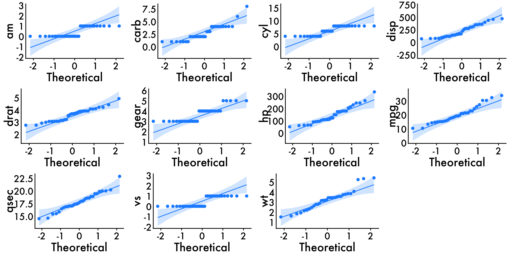
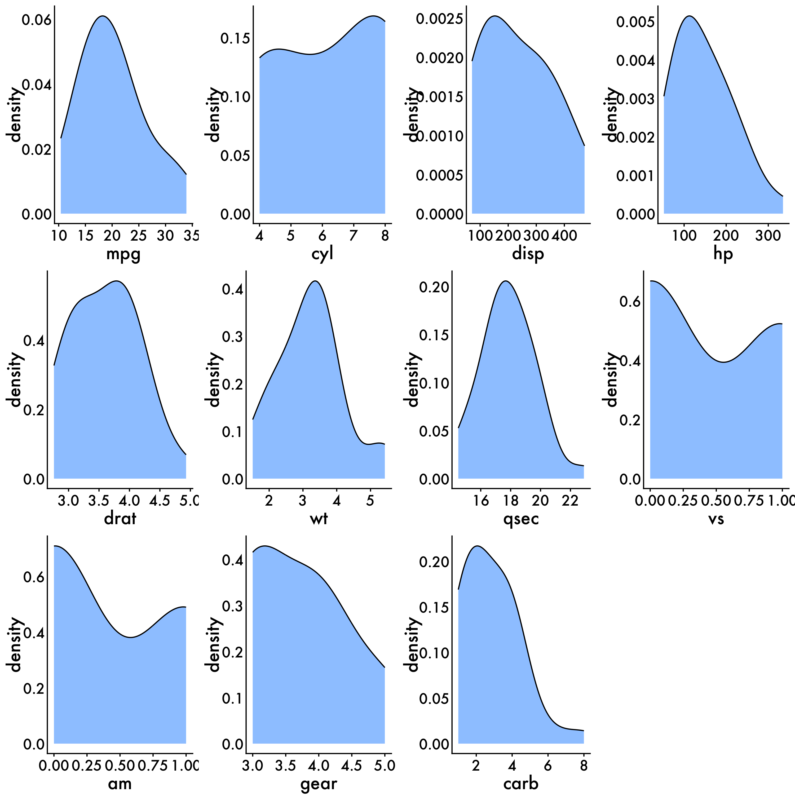
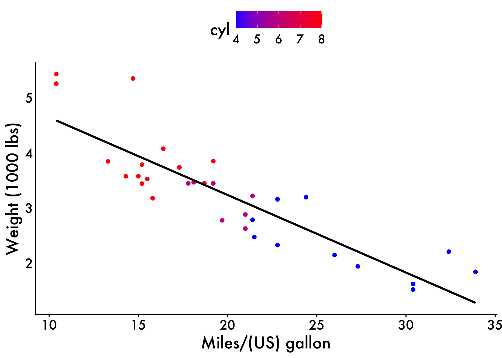
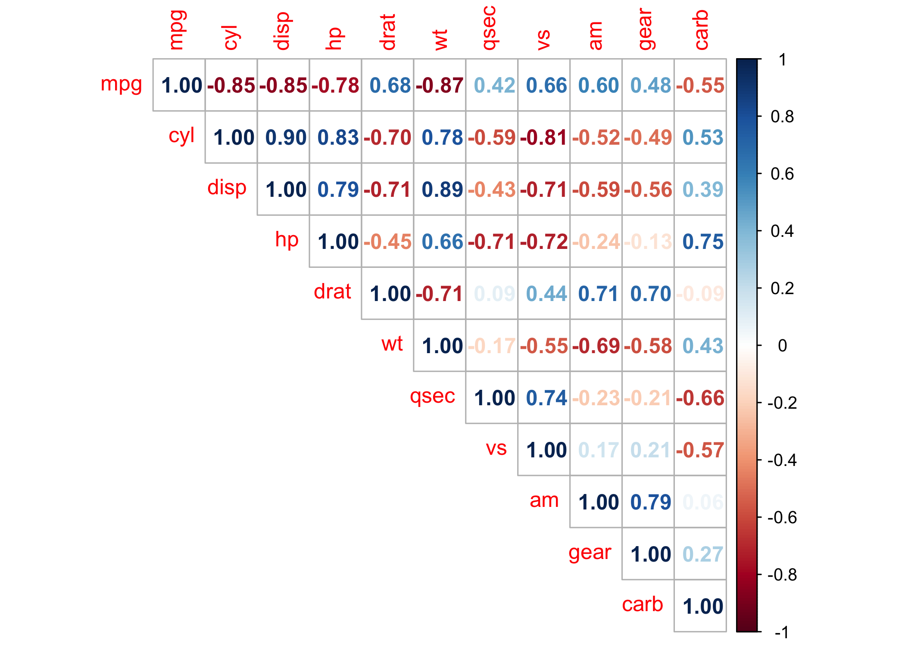

setwd("~/Desktop/Coding-Boot-Camp/correlation") #change to your own WD. you can do that by modifying the file path or go session (on the upper bar) --> set working directory)Simple Correlation examples for students
Getting everything set up
Set working directory
Change to your own working directory (WD) to save things like plots. You can do that by modifying the file path or go session (on the upper bar) –> set working directory). Working directories are important in R because they tell the computer where to look to grab information and save things like results. This can vary by project, script, etc. so it’s important to consistently have the appropriate WD. If you are unsure what your current WD is, you can use the getwd command in the console (usually the lower left hand pane) to get your WD.
Load Packages
if (!require("pacman")) install.packages("pacman") #run this if you don't have pacman
library(pacman)
pacman::p_load(tidyverse, ggpubr, rstatix, zoo, rlang,caret, broom, kableExtra, reactable, Hmisc, datarium, car,corrplot, plotrix, install = T)
#use pacman to load packages quickly For this script, and here forward, We use pacman to load in all of our packages rather than using the iterative if (!require("PACKAGE")) install.packages("PACKAGE") set-up. There’s still some merit to using that if loading in packages in a certain order creates issues (e.g.,tidyverse and brms in a certain fashion).
Get our plot aesthetics set-up
This is a super quick and easy way to style our plots without introduce a vile amount of code lines to each chunk!
palette_map = c("#3B9AB2", "#EBCC2A", "#F21A00")
palette_condition = c("#ee9b00", "#bb3e03", "#005f73")
plot_aes = theme_classic() + #
theme(legend.position = "top",
legend.text = element_text(size = 12),
text = element_text(size = 16, family = "Futura Medium"),
axis.text = element_text(color = "black"),
axis.line = element_line(colour = "black"),
axis.ticks.y = element_blank())Build Relevant Functions
Using stuff like summary functions allows for us to present results in a clean, organized manner. For example, we can trim superfluous information from model output when sharing with collaborators among other things.
#summary stats function
mystats_df <- function(df, na.omit=FALSE) {
if (na.omit) {
df <- df[complete.cases(df), ]
}
stats_df <- data.frame(
n = rep(NA, ncol(df)),
mean = rep(NA, ncol(df)),
stdev = rep(NA, ncol(df)),
skew = rep(NA, ncol(df)),
kurtosis = rep(NA, ncol(df))
)
for (i in seq_along(df)) {
x <- df[[i]]
m <- mean(x)
n <- length(x)
s <- sd(x)
skew <- sum((x-m)^3/s^3)/n
kurt <- sum((x-m)^4/s^4)/n - 3
stats_df[i, ] <- c(n, m, s, skew, kurt)
}
row.names(stats_df) <- colnames(df)
return(stats_df)
}
# correlation table function
apply_if <- function(mat, p, f) {
# Fill NA with FALSE
p[is.na(p)] <- FALSE
mat[p] <- f(mat[p])
mat
}
corr_table <- function(mat, corrtype = "pearson") {
matCorr <- mat
if (class(matCorr) != "rcorr") {
matCorr <- rcorr(mat, type = corrtype)
}
# Remove upper diagonal
matCorr$r[upper.tri(matCorr$r)] <- NA
matCorr$P[upper.tri(matCorr$P)] <- NA
# Add one star for each p < 0.05, 0.01, 0.001
stars <- apply_if(round(matCorr$r, 2), matCorr$P < 0.05, function(x) paste0(x, "*"))
stars <- apply_if(stars, matCorr$P < 0.01, function(x) paste0(x, "*"))
stars <- apply_if(stars, matCorr$P < 0.001, function(x) paste0(x, "*"))
# Put - on diagonal and blank on upper diagonal
stars[upper.tri(stars, diag = T)] <- "-"
stars[upper.tri(stars, diag = F)] <- ""
n <- length(stars[1,])
colnames(stars) <- 1:n
# Remove _ and convert to title case
row.names(stars) <- tools::toTitleCase(sapply(row.names(stars), gsub, pattern="_", replacement = " "))
# Add index number to row names
row.names(stars) <- paste(paste0(1:n,"."), row.names(stars))
kable(stars) %>%
kableExtra::kable_styling()
}Load data
Since we are using an existing dataset in R, we don’t need to do anything fancy here. However, when normally load in data you can use a few different approaches. In most reproducible scripts you’ll see people use nomenclature similar to df, data, dataframe, etc. to denote a dataframe. If you are working with multiple datasets, it’s advisable to call stuff by a intuitive name that allows you to know what the data actually is. For example, if I am working with two different corpora (e.g., Atlantic and NYT Best-Sellers) I will probably call the Atlantic dataframe atlantic and the NYT Best-sellers NYT for simplicity and so I don’t accidentally write over files.
For example, if your WD is already set and the data exists within said directory you can use: df <- read_csv(MY_CSV.csv)
If the data is on something like Github you can use: df <- read_csv('https://raw.githubusercontent.com/scm1210/Language_Lab_Repro/main/Atlantic_Cleaned_all_vars.csv') #read in the data.
If you are working in one directory and need to call something for another directory you can do something like: Atlantic_FK <- read_csv("~/Desktop/working-with-lyle/Atlantic/Atlantic_flesch_kinkaid_scores.csv")
There are also other packages/functions that allow you to read in files with different extensions such as haven::read_sav() to read in a file from SPSS or rjson:: fromJSON(file="data.json")to read in a json file. If you want to learn more about how to reading in different files you can take a peek at this site.
For the first half, we are going to be using the mtcars dataset which is built into R and we are going to call it df.
# Load the data
data("mtcars")Brief Description
Now that we got everything set up, we are going to get into our analyses.Today we are going to look at Simple Correlations. A correlation test is used to evaluate the association between two or more variables. For instance, if we are interested to know whether there is a relationship between the weight and fuel efficiency of cars, a correlation coefficient can be calculated to answer this question. If there is no relationship between the two variables (weight and MPG), the average MPG should be the same regardless of the weight of the car and vice versa. For the first part we are going to look how different car qualities relate to each other!
Some other things
Simple Correlation tests can only be calculated between continuous variables. However, there are other types of correlations tests that can be used to deal with different data types (that’s outside the scope of this tutorial).
Spurious correlations exist (i.e., correlations != causation)! Just because something appears to be related, due to it’s correlation coefficient, doesn’t mean there’s actually a relationship there. For example, consumption of ice cream and boating accidents are often related. However, does eating more ice cream reallyyyy lead to people having boat accidents? Think about it. Also, if we are going to infer causation we have to manipulate variables experimentally. We often do not do that in studies where we use correlational analyses.
You should become familiar with how to interpret correlation coefficients (esp within your specific field). That is, what is a small, medium, and large correlation? At what point is a correlation coefficient too large (e.g., are you measuring the same construct)? Here’s an article that may help!
Statistical Assumptions
Assumption are also important. That is, data need to possess certain qualities for us to be able to use this type of test. For a t-test these are:
The data are continuous (not ordinal or nominal).
Data from both variables follow normal distributions.
Your data have no outliers.
Your data is from a random or representative sample.
You expect a linear relationship between the two variables.
Click through the tabs to see how to check each assumption.
Continuous
We can check this by looking at the structure of our data using the str function (for all the variables in our dataset). We can see what variables R is treating as continuous and move forward with our analyses!
str(mtcars)'data.frame': 32 obs. of 11 variables:
$ mpg : num 21 21 22.8 21.4 18.7 18.1 14.3 24.4 22.8 19.2 ...
$ cyl : num 6 6 4 6 8 6 8 4 4 6 ...
$ disp: num 160 160 108 258 360 ...
$ hp : num 110 110 93 110 175 105 245 62 95 123 ...
$ drat: num 3.9 3.9 3.85 3.08 3.15 2.76 3.21 3.69 3.92 3.92 ...
$ wt : num 2.62 2.88 2.32 3.21 3.44 ...
$ qsec: num 16.5 17 18.6 19.4 17 ...
$ vs : num 0 0 1 1 0 1 0 1 1 1 ...
$ am : num 1 1 1 0 0 0 0 0 0 0 ...
$ gear: num 4 4 4 3 3 3 3 4 4 4 ...
$ carb: num 4 4 1 1 2 1 4 2 2 4 ...Randomly Sampled
This is something you do when you design the study–we can’t do anything in R to check this.
No outliers
We can use the QQ-plot to inspect for outliers, which is in the ggpubr package. To do this we are going to utilize R’s ability to write functions and for loops. First, we grab all of the names of the variables we want to get qq-plots for using vars <- colnames(mtcars) and save them as a list in R. This will allow us to specify what variables we want to graph. Depending on what datset we are working with, that can be as few as 2 or as many as the entire dataset! Second, we write our qqplot_all function which allows us to write the same graph as many times as we want without having to write out graphing code every. single. time. This is especially useful when graphs don’t need unique customizations. Next, we write out for loop which allows us to use the qqplot_all function for each of the 11 graphs and save them as 11 unique objects named qq_var[i]. We then arrange all 11 using ggarrange so we can take a look. Lastly, we use Markdown’s customizability to specify how large (or small) we want out figure to be. Here we go with a 10 x 10 figure. We can see that the variable don’t have any observations > abs(3) and therefore no outliers.
vars <- colnames(mtcars)
qqplot_all <- function(data) {
vars <- names(data)
n_vars <- length(vars)
for(i in 1:n_vars) {
qqplot <- ggqqplot(data[[i]], ylab = vars[i],color = "dodgerblue") + plot_aes
assign(paste0("qq_", vars[i]), qqplot, envir = .GlobalEnv)
}
}
qqplot_all(mtcars) # create QQ plots for all variables
ggarrange(qq_am,qq_carb,qq_cyl,qq_disp,qq_drat,qq_gear,qq_hp,qq_mpg,qq_qsec,qq_vs,qq_wt, common.legend = T, legend = 'right')
Normal Distribution
To check the distribution of the data we can use density plots in the ggplot within tidyverse to visualize this. It’s also important to get some statistics behind this, and to do that we can look at skewness and kurtosis via the mystats function that we wrote earlier. You can also use psych::describe to get similar information. For skewness and kurtosis, we want values of skewness fall between − 3 and + 3, and kurtosis is appropriate from a range of − 10 to + 10.
For this example we are also going to visualize all of the variables in the dataset! To do this we are going to agian utilize R’s ability to write functions and for loops. First, we grab all of the names of the variables we want to get density plots for using vars <- colnames(mtcars) and save them as a list in R. Second, we write our density function which allows us to write the same graph as many times as we want without having to write out graphing code every. single. time. Next, we write out for loop which allows us to use the density function for each of the 11 graphs and save them as 11 unique objects named d[i]. We then arrange all 11 using ggarrange so we can take a look. Lastly, we use Markdown’s customizability to specify how large (or small) we want out figure to be.
#names <- select(data,14:130) #get names of certain variables
#names <- colnames(df) #if you wanna graph ALL the variables
vars <- colnames(mtcars)
#loop to create density plots
density <- function(data, x, y){ #create graphing function
ggplot(data = data) +
geom_density(aes_string(x = vars[i]),
adjust = 1.5,
alpha = 0.5, fill = "dodgerblue") + plot_aes
}
for(i in 1:11) { #loop use graphing function 11 times
nam <- paste("d", i, sep = "")
assign(nam, density(mtcars,vars[i]))
}
ggarrange(d1,d2,d3,d4,d5,d6,d7,d8,d9,d10,d11, common.legend = T, legend = 'right')
You expect a linear relationship between the two variables.
To check this assumption you can plot a scatter and plot between two variables and plot a line of best fit using ggplot. Since we have a bunch of variables in our dataset that we might be interested in, we are only ging to do a few for simplicity’s sake (weight and MPG).
ggplot(data = mtcars, aes(x = mpg, y = wt, color = cyl)) +
geom_point() +
geom_smooth(method = "lm", se = FALSE, color = "black") +
scale_color_gradient(low = "blue", high = "red") +
labs(x = "Miles/(US) gallon", y = "Weight (1000 lbs)") +
plot_aes
Summary Statistics
It’s also important for us to get some summary statistics for our data (e.g., N’s, Means, SDs).
Sample Size, Means, Standard Deviations, etc.!
mtcars %>%
get_summary_stats(type = "full") %>%
reactable::reactable(striped = TRUE)Get summary stats for entire dataframe
Also can grab things like skewness and kurtosis!
mystats_df(mtcars) n mean stdev skew kurtosis
mpg 32 20.0906 6.0269 0.6107 -0.37277
cyl 32 6.1875 1.7859 -0.1746 -1.76212
disp 32 230.7219 123.9387 0.3817 -1.20721
hp 32 146.6875 68.5629 0.7260 -0.13555
drat 32 3.5966 0.5347 0.2659 -0.71470
wt 32 3.2172 0.9785 0.4231 -0.02271
qsec 32 17.8487 1.7869 0.3690 0.33511
vs 32 0.4375 0.5040 0.2403 -2.00194
am 32 0.4062 0.4990 0.3640 -1.92474
gear 32 3.6875 0.7378 0.5289 -1.06975
carb 32 2.8125 1.6152 1.0509 1.25704Main Analyses
Simple example
Now, we’ll conduct our correlation analyses. For simplicity, we’ll again start with just two variables (weight and mpg) and then scale up.
From inspecting our output we can see there is a significant, large, negative correlation between mpg and car weight [r = -0.8677, p < .001].
res <- cor.test(mtcars$wt, mtcars$mpg,
method = "pearson")
res
Pearson's product-moment correlation
data: mtcars$wt and mtcars$mpg
t = -9.6, df = 30, p-value = 1e-10
alternative hypothesis: true correlation is not equal to 0
95 percent confidence interval:
-0.9338 -0.7441
sample estimates:
cor
-0.8677 Scaling!
Now that we’ve seen how to conduct a correlation between two variables, let’s scale it. R is flexible and can let us run a correlation between every variable in the dataset or just a select few. Since mtcars is a nice dataset to work with, we’ll do the entire dataset using corr <- rcorr(as.matrix(mtcars[1:11])) saving our output as an object. However, when inspect our object we get the r-values (correlation coefficients) and p-values in two separate matricies. Having these in two separate matricies is ok. However, it doesn’t do much for us in terms of trying to make sense of our data. So, let’s visualize it.
corr <- rcorr(as.matrix(mtcars[1:11]))
corr mpg cyl disp hp drat wt qsec vs am gear carb
mpg 1.00 -0.85 -0.85 -0.78 0.68 -0.87 0.42 0.66 0.60 0.48 -0.55
cyl -0.85 1.00 0.90 0.83 -0.70 0.78 -0.59 -0.81 -0.52 -0.49 0.53
disp -0.85 0.90 1.00 0.79 -0.71 0.89 -0.43 -0.71 -0.59 -0.56 0.39
hp -0.78 0.83 0.79 1.00 -0.45 0.66 -0.71 -0.72 -0.24 -0.13 0.75
drat 0.68 -0.70 -0.71 -0.45 1.00 -0.71 0.09 0.44 0.71 0.70 -0.09
wt -0.87 0.78 0.89 0.66 -0.71 1.00 -0.17 -0.55 -0.69 -0.58 0.43
qsec 0.42 -0.59 -0.43 -0.71 0.09 -0.17 1.00 0.74 -0.23 -0.21 -0.66
vs 0.66 -0.81 -0.71 -0.72 0.44 -0.55 0.74 1.00 0.17 0.21 -0.57
am 0.60 -0.52 -0.59 -0.24 0.71 -0.69 -0.23 0.17 1.00 0.79 0.06
gear 0.48 -0.49 -0.56 -0.13 0.70 -0.58 -0.21 0.21 0.79 1.00 0.27
carb -0.55 0.53 0.39 0.75 -0.09 0.43 -0.66 -0.57 0.06 0.27 1.00
n= 32
P
mpg cyl disp hp drat wt qsec vs am gear
mpg 0.0000 0.0000 0.0000 0.0000 0.0000 0.0171 0.0000 0.0003 0.0054
cyl 0.0000 0.0000 0.0000 0.0000 0.0000 0.0004 0.0000 0.0022 0.0042
disp 0.0000 0.0000 0.0000 0.0000 0.0000 0.0131 0.0000 0.0004 0.0010
hp 0.0000 0.0000 0.0000 0.0100 0.0000 0.0000 0.0000 0.1798 0.4930
drat 0.0000 0.0000 0.0000 0.0100 0.0000 0.6196 0.0117 0.0000 0.0000
wt 0.0000 0.0000 0.0000 0.0000 0.0000 0.3389 0.0010 0.0000 0.0005
qsec 0.0171 0.0004 0.0131 0.0000 0.6196 0.3389 0.0000 0.2057 0.2425
vs 0.0000 0.0000 0.0000 0.0000 0.0117 0.0010 0.0000 0.3570 0.2579
am 0.0003 0.0022 0.0004 0.1798 0.0000 0.0000 0.2057 0.3570 0.0000
gear 0.0054 0.0042 0.0010 0.4930 0.0000 0.0005 0.2425 0.2579 0.0000
carb 0.0011 0.0019 0.0253 0.0000 0.6212 0.0146 0.0000 0.0007 0.7545 0.1290
carb
mpg 0.0011
cyl 0.0019
disp 0.0253
hp 0.0000
drat 0.6212
wt 0.0146
qsec 0.0000
vs 0.0007
am 0.7545
gear 0.1290
carb Visualize using corrplot
We can use the corrplot package to visualize our matrix. This is a great package for using shapes and colors to indicate the strength and direction of variable relationships.
Now we’ll breakdown what each part of this function does:
corr$rAllows us to feed in the correlation coefficients from our matrixtype="upper"Specifies we want the upper diagonal for our matrixbg = "white"Set the background to whitemethod = "number"Lets us use numbers as a way to visualize the results. We can also use things liek squares, circles, etc.number.cex = 15/ncol(corr)Allows for us to tinker with the size of the numbers to make them fit.insig = "blank"Let the correlations that are p > .05 be blank (or whatever threshold you specify).
#Visualize
corrplot(corr$r, type="upper",bg = "white", method = "number",number.cex= 15/ncol(corr),insig = "blank")
Build a table
While building a data visualiaton is cool, sometimes we want to build a professional table. We can do this using a function and kable styling to make it very pretty and presentable :). We do some by feeding our correlation objcet into our corr_table function. This not only gives us the correlation coefficients, but also the p-value thresholds they are are significant at.
corr_table(corr)| 1 | 2 | 3 | 4 | 5 | 6 | 7 | 8 | 9 | 10 | 11 | |
|---|---|---|---|---|---|---|---|---|---|---|---|
| 1. Mpg | - | ||||||||||
| 2. Cyl | -0.85*** | - | |||||||||
| 3. Disp | -0.85*** | 0.9*** | - | ||||||||
| 4. Hp | -0.78*** | 0.83*** | 0.79*** | - | |||||||
| 5. Drat | 0.68*** | -0.7*** | -0.71*** | -0.45** | - | ||||||
| 6. Wt | -0.87*** | 0.78*** | 0.89*** | 0.66*** | -0.71*** | - | |||||
| 7. Qsec | 0.42* | -0.59*** | -0.43* | -0.71*** | 0.09 | -0.17 | - | ||||
| 8. Vs | 0.66*** | -0.81*** | -0.71*** | -0.72*** | 0.44* | -0.55*** | 0.74*** | - | |||
| 9. Am | 0.6*** | -0.52** | -0.59*** | -0.24 | 0.71*** | -0.69*** | -0.23 | 0.17 | - | ||
| 10. Gear | 0.48** | -0.49** | -0.56*** | -0.13 | 0.7*** | -0.58*** | -0.21 | 0.21 | 0.79*** | - | |
| 11. Carb | -0.55** | 0.53** | 0.39* | 0.75*** | -0.09 | 0.43* | -0.66*** | -0.57*** | 0.06 | 0.27 | - |
High-level example
Now, we’ll see what look to scale example at the highest level. For this script we are going to take a look at how different language variables from Presidential Inaugural Addresses correlate with one another. These speeches were retrieved from the NLTK corpus via python and analyzed using LIWC, spaCY, and NLTK.
Load the data
inaug <- read_csv('https://raw.githubusercontent.com/scm1210/Summer-Coding/main/data/Inaug_ALL_VARS.csv') #read in the data
inaug <- inaug %>% mutate(we_i_ratio = we/i)
tidy_df_Inaug<- inaug %>%
group_by(year) %>% ###grouping by the year
summarise_at(vars("WPS","readability","grade_level",'i','we','pronoun','det','syllables_per_word','syllables_per_sentence', "% words POS possessive","% words 'of'", "Contractions","we_i_ratio"), funs(mean, std.error),) #pulling the means and SEs for our variables of interest
# Get the mean values for the first year in the dataset
year_means <- tidy_df_Inaug %>%
filter(year == 1789) Variable Description
Flesch-Kincaid Ease of Readability: higher scores indicate material that is easier to read; lower numbers mark passages that are more difficult to read. Calculated using spaCy in python.
The Flesch–Kincaid Grade Level Score: presents a score as a U.S. grade level, making it easier for teachers, parents, librarians, and others to judge the readability level of various books and texts.Calculated using spaCy in python.
I-usage: First-person singular pronoun usage (% of total words). Calculated using LIWC.
We-usage: First-person plural pronoun usage (% of total words). Calculated using LIWC.
Pronoun-usage: Overall pronoun usage (% of total words). Calculated using LIWC.
Possessive-usage:First-person singular pronoun usage (% of total words). Calculated using NLTK POS, PRP, and PRP$ parser
Of-usage: Usage of the word ‘of’ (% of total words). Calculated using NLTK parser.
Contraction-usage: Usage of 85 most common contractions in English (% of total words). Calculated using custom LIWC dictionary.
Determiners-usage: Determiner usage (% of total words). Calculated using LIWC.
Summary Stats
Dates
inaug %>%
select(year) %>%
range()[1] 1789 2021Raw count of Speeches
inaug %>%
select(Filename) %>%
dplyr::summarize(n = n()) %>%
reactable::reactable(striped = TRUE)Speeches per year
articles_year <- inaug %>%
select(Filename,year) %>%
unique() %>%
group_by(year) %>%
dplyr::summarize(n = n()) %>%
reactable::reactable(striped = TRUE)
articles_yearCorrelations
inaug_corr <- rcorr(as.matrix(tidy_df_Inaug[1:14]))
corr_table(inaug_corr)| 1 | 2 | 3 | 4 | 5 | 6 | 7 | 8 | 9 | 10 | 11 | 12 | 13 | 14 | |
|---|---|---|---|---|---|---|---|---|---|---|---|---|---|---|
| 1. Year | - | |||||||||||||
| 2. WPS Mean | -0.82*** | - | ||||||||||||
| 3. Readability Mean | 0.85*** | -0.92*** | - | |||||||||||
| 4. Grade Level Mean | -0.85*** | 0.98*** | -0.98*** | - | ||||||||||
| 5. i Mean | -0.46*** | 0.45*** | -0.38** | 0.42*** | - | |||||||||
| 6. We Mean | 0.85*** | -0.7*** | 0.78*** | -0.75*** | -0.45*** | - | ||||||||
| 7. Pronoun Mean | 0.5*** | -0.39** | 0.57*** | -0.49*** | 0.09 | 0.72*** | - | |||||||
| 8. Det Mean | -0.41** | 0.33* | -0.36** | 0.34** | -0.06 | -0.48*** | -0.48*** | - | ||||||
| 9. Syllables per Word Mean | -0.72*** | 0.65*** | -0.89*** | 0.78*** | 0.25 | -0.71*** | -0.66*** | 0.33* | - | |||||
| 10. Syllables per Sentence Mean | -0.83*** | 0.99*** | -0.95*** | 0.99*** | 0.44*** | -0.72*** | -0.44*** | 0.33* | 0.71*** | - | ||||
| 11. % Words POS Possessive Mean | 0.68*** | -0.52*** | 0.64*** | -0.58*** | -0.28* | 0.67*** | 0.54*** | -0.24 | -0.67*** | -0.54*** | - | |||
| 12. % Words 'of' Mean | -0.61*** | 0.51*** | -0.65*** | 0.59*** | 0.26* | -0.64*** | -0.59*** | 0.5*** | 0.68*** | 0.55*** | -0.61*** | - | ||
| 13. Contractions Mean | 0.34** | -0.23 | 0.29* | -0.26* | 0.12 | 0.28* | 0.35** | -0.1 | -0.3* | -0.23 | 0.34** | -0.3* | - | |
| 14. We i Ratio Mean | 0.35** | -0.3* | 0.34** | -0.32* | -0.44*** | 0.47*** | 0.26* | 0.05 | -0.32* | -0.31* | 0.26* | -0.19 | 0.05 | - |
Package Citations
report::cite_packages() - Fox J, Weisberg S (2019). _An R Companion to Applied Regression_, Third edition. Sage, Thousand Oaks CA. <https://www.john-fox.ca/Companion/>.
- Fox J, Weisberg S, Price B (2022). _carData: Companion to Applied Regression Data Sets_. doi:10.32614/CRAN.package.carData <https://doi.org/10.32614/CRAN.package.carData>, R package version 3.0-5, <https://CRAN.R-project.org/package=carData>.
- Grolemund G, Wickham H (2011). "Dates and Times Made Easy with lubridate." _Journal of Statistical Software_, *40*(3), 1-25. <https://www.jstatsoft.org/v40/i03/>.
- Harrell Jr F (2025). _Hmisc: Harrell Miscellaneous_. doi:10.32614/CRAN.package.Hmisc <https://doi.org/10.32614/CRAN.package.Hmisc>, R package version 5.2-3, <https://CRAN.R-project.org/package=Hmisc>.
- Henry L, Wickham H (2025). _rlang: Functions for Base Types and Core R and 'Tidyverse' Features_. doi:10.32614/CRAN.package.rlang <https://doi.org/10.32614/CRAN.package.rlang>, R package version 1.1.6, <https://CRAN.R-project.org/package=rlang>.
- J L (2006). "Plotrix: a package in the red light district of R." _R-News_, *6*(4), 8-12.
- Kassambara A (2019). _datarium: Data Bank for Statistical Analysis and Visualization_. doi:10.32614/CRAN.package.datarium <https://doi.org/10.32614/CRAN.package.datarium>, R package version 0.1.0, <https://CRAN.R-project.org/package=datarium>.
- Kassambara A (2023). _rstatix: Pipe-Friendly Framework for Basic Statistical Tests_. doi:10.32614/CRAN.package.rstatix <https://doi.org/10.32614/CRAN.package.rstatix>, R package version 0.7.2, <https://CRAN.R-project.org/package=rstatix>.
- Kassambara A (2025). _ggpubr: 'ggplot2' Based Publication Ready Plots_. doi:10.32614/CRAN.package.ggpubr <https://doi.org/10.32614/CRAN.package.ggpubr>, R package version 0.6.1, <https://CRAN.R-project.org/package=ggpubr>.
- Kuhn, Max (2008). "Building Predictive Models in R Using the caret Package." _Journal of Statistical Software_, *28*(5), 1–26. doi:10.18637/jss.v028.i05 <https://doi.org/10.18637/jss.v028.i05>, <https://www.jstatsoft.org/index.php/jss/article/view/v028i05>.
- Lin G (2023). _reactable: Interactive Data Tables for R_. doi:10.32614/CRAN.package.reactable <https://doi.org/10.32614/CRAN.package.reactable>, R package version 0.4.4, <https://CRAN.R-project.org/package=reactable>.
- Müller K, Wickham H (2025). _tibble: Simple Data Frames_. doi:10.32614/CRAN.package.tibble <https://doi.org/10.32614/CRAN.package.tibble>, R package version 3.3.0, <https://CRAN.R-project.org/package=tibble>.
- R Core Team (2025). _R: A Language and Environment for Statistical Computing_. R Foundation for Statistical Computing, Vienna, Austria. <https://www.R-project.org/>.
- Rinker TW, Kurkiewicz D (2018). _pacman: Package Management for R_. version 0.5.0, <http://github.com/trinker/pacman>.
- Robinson D, Hayes A, Couch S (2025). _broom: Convert Statistical Objects into Tidy Tibbles_. doi:10.32614/CRAN.package.broom <https://doi.org/10.32614/CRAN.package.broom>, R package version 1.0.10, <https://CRAN.R-project.org/package=broom>.
- Sarkar D (2008). _Lattice: Multivariate Data Visualization with R_. Springer, New York. ISBN 978-0-387-75968-5, <http://lmdvr.r-forge.r-project.org>.
- Wei T, Simko V (2024). _R package 'corrplot': Visualization of a Correlation Matrix_. (Version 0.95), <https://github.com/taiyun/corrplot>.
- Wickham H (2016). _ggplot2: Elegant Graphics for Data Analysis_. Springer-Verlag New York. ISBN 978-3-319-24277-4, <https://ggplot2.tidyverse.org>.
- Wickham H (2023). _forcats: Tools for Working with Categorical Variables (Factors)_. doi:10.32614/CRAN.package.forcats <https://doi.org/10.32614/CRAN.package.forcats>, R package version 1.0.0, <https://CRAN.R-project.org/package=forcats>.
- Wickham H (2025). _stringr: Simple, Consistent Wrappers for Common String Operations_. doi:10.32614/CRAN.package.stringr <https://doi.org/10.32614/CRAN.package.stringr>, R package version 1.5.2, <https://CRAN.R-project.org/package=stringr>.
- Wickham H, Averick M, Bryan J, Chang W, McGowan LD, François R, Grolemund G, Hayes A, Henry L, Hester J, Kuhn M, Pedersen TL, Miller E, Bache SM, Müller K, Ooms J, Robinson D, Seidel DP, Spinu V, Takahashi K, Vaughan D, Wilke C, Woo K, Yutani H (2019). "Welcome to the tidyverse." _Journal of Open Source Software_, *4*(43), 1686. doi:10.21105/joss.01686 <https://doi.org/10.21105/joss.01686>.
- Wickham H, François R, Henry L, Müller K, Vaughan D (2023). _dplyr: A Grammar of Data Manipulation_. doi:10.32614/CRAN.package.dplyr <https://doi.org/10.32614/CRAN.package.dplyr>, R package version 1.1.4, <https://CRAN.R-project.org/package=dplyr>.
- Wickham H, Henry L (2025). _purrr: Functional Programming Tools_. doi:10.32614/CRAN.package.purrr <https://doi.org/10.32614/CRAN.package.purrr>, R package version 1.1.0, <https://CRAN.R-project.org/package=purrr>.
- Wickham H, Hester J, Bryan J (2024). _readr: Read Rectangular Text Data_. doi:10.32614/CRAN.package.readr <https://doi.org/10.32614/CRAN.package.readr>, R package version 2.1.5, <https://CRAN.R-project.org/package=readr>.
- Wickham H, Vaughan D, Girlich M (2024). _tidyr: Tidy Messy Data_. doi:10.32614/CRAN.package.tidyr <https://doi.org/10.32614/CRAN.package.tidyr>, R package version 1.3.1, <https://CRAN.R-project.org/package=tidyr>.
- Zeileis A, Grothendieck G (2005). "zoo: S3 Infrastructure for Regular and Irregular Time Series." _Journal of Statistical Software_, *14*(6), 1-27. doi:10.18637/jss.v014.i06 <https://doi.org/10.18637/jss.v014.i06>.
- Zhu H (2024). _kableExtra: Construct Complex Table with 'kable' and Pipe Syntax_. doi:10.32614/CRAN.package.kableExtra <https://doi.org/10.32614/CRAN.package.kableExtra>, R package version 1.4.0, <https://CRAN.R-project.org/package=kableExtra>.